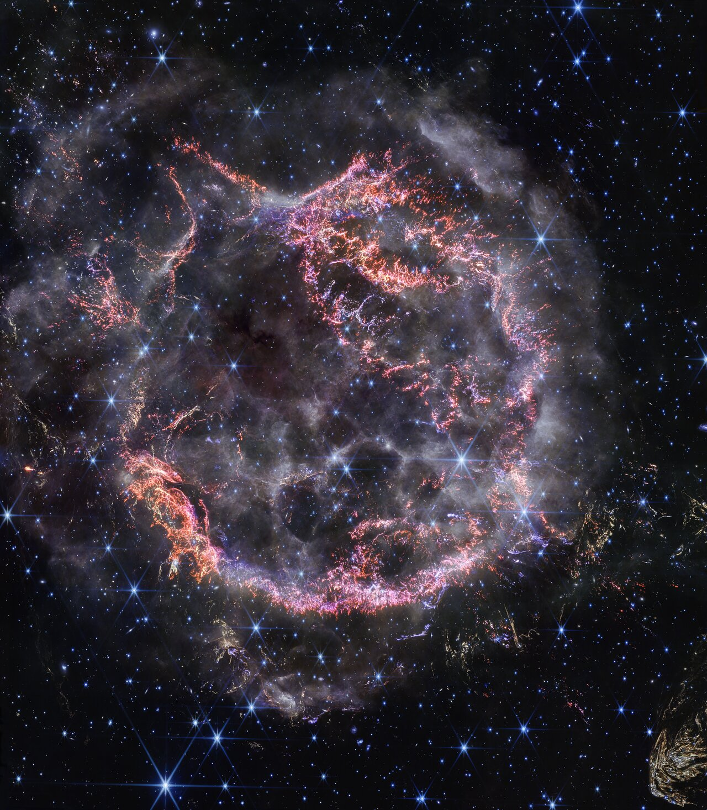

01
超新星光谱偏振
使用连续谱与谱线偏振，测量不同类型超新星抛射物的整体形状、元素分布与观测视角。
SPECTROPOLARIMETRYTSINGHUA ASTROPHYSICS
我们观测宇宙中的瞬变与爆发现象，从微弱的偏振信号中，还原超新星不可直接分辨的三维几何与物理过程。

RESEARCH SIGNALS
WHY POLARIZATION
超新星看起来只是遥远的一个光点。偏振把这个光点展开为几何信息：爆炸是否对称、物质如何分布、激波如何穿过恒星表面，以及尘埃如何改变光的传播。
RESEARCH / 研究方向
我们连接快速响应观测、光谱偏振测量与辐射转移建模，追踪恒星死亡过程中的非球对称结构。
使用连续谱与谱线偏振，测量不同类型超新星抛射物的整体形状、元素分布与观测视角。
SPECTROPOLARIMETRY在爆发后数小时至数天内快速响应，捕捉恒星表面和周围致密物质尚未被抛射物掩盖时的几何。
RAPID RESPONSE以三维蒙特卡洛方法连接偏振信号、星周盘/环结构、双星相互作用和爆发前质量损失。
RADIATIVE TRANSFERFEATURED RESULT / 2025
团队在 II 型超新星 SN 2024ggi 爆发约 1.2 天后取得光谱偏振观测，发现激波突破与随后出现的富氢包层共享清晰的对称轴。
PEOPLE / 团队成员
团队立足清华大学物理系，与国内外观测者和理论研究者协作，开展超新星偏振研究。
PUBLICATIONS / 论文
以下聚焦团队的超新星偏振研究；杨轶的完整论文列表可在 NASA ADS ↗ 查看。
ARXIV PREPRINT
SCIENCE ADVANCES
ARXIV PREPRINT
ARXIV PREPRINT
THE ASTROPHYSICAL JOURNAL
THE ASTROPHYSICAL JOURNAL LETTERS
MONTHLY NOTICES OF THE RAS
MONTHLY NOTICES OF THE RAS
MONTHLY NOTICES OF THE RAS
THE ASTROPHYSICAL JOURNAL
MONTHLY NOTICES OF THE RAS
THE ASTROPHYSICAL JOURNAL
THE ASTROPHYSICAL JOURNAL
CONTACT / 联系我们
欢迎围绕超新星、时域天文与偏振观测开展合作。对加入团队、访问交流或学术报告感兴趣，也欢迎来信。
yi_yang@mail.tsinghua.edu.cn ↗